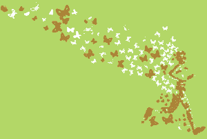
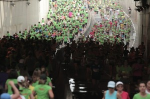
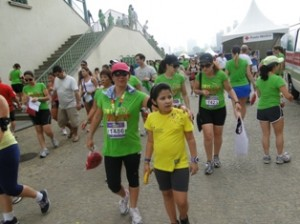

vamo, vamo, vamo…
Fevereiro marcante !

A semana passada estive na contagem regressiva.
Meu fisio me liberou para as corridas meio que assim ……. a paciente (eu) impôs data limite..rs. Quero esclarecer que não foi pressão ou intimidação. Como meu tornozelo não estava doendo ou inchando, achei que até o final de fevereiro poderia estar voltando para as corridas. Consultei-o em janeiro por já ter o projeto de correr no dia 27/02. A princípio ele se assustou e, disse que achava que eu não conseguiria correr os 5 k e mais rápido que o vento, emendei que nem antes do acidente eu conseguia correr 5 k, pois intercalava entre trotes e caminhadas fortes. Recebi “um acho que consegue” meio cético, então as sessões de fisio foram também direcionadas para corrida.
Além de querer voltar no final do mês de fevereiro, fixei para minha meta de retorno fazer 5k em 43 min, sabendo que faltariam pulmões, já que durante a fisio as pernas estavam sendo muito mais trabalhadas que o restante do corpo.
Enfim sábado chegou. Fomos buscar meu kit e ficamos um pouco no Jockey de S.Paulo apreciando as corridas de cavalo, meus pensamentos estavam naquele momento, foi uma tarde muito agradável com sol marcante.
Enquanto estou escrevo esta percebi que não fiquei pensando em como seria corrida ou o dia seguinte, como se fosse uma página a ser escrita em outra oportunidade. Foi uma atitude impensada o não pensar no dia seguinte, ao passo nos dias anteriores, conforme chegava a data, pensava apenas em conseguir terminar e tentar melhorar meu tempo.
Domingo saímos de casa as 6hs10 min, pegamos até um pouco de transito na r. da Consolação, depois bastante tráfego na Av. Rebouças, inusitado para o dia e horário, mas tudo não passaria de uma colisão após o cruzamento com a Av. Brasil.
Ao chegarmos na Marg. Pinheiros, no acesso ao Jockey é que a coisa complicou, resolvemos que eu saltaria e seguiria pé. Estava com tempo de sobra para andar calmamente. Cortei caminho por dentro do Jockey para sair pelo portão principal e me dirigir ao ponto de largada na Av. Lineu de Paula Machado. Durante esse percurso vi a quantidade de mulheres pelo caminho acompanhadas das famílias.
Antes de ir para o local na largada designado para minha categoria (8′) liguei o maridão e Syssi que já estavam próximos do portal da largada.
Posicionei-me em minha categoria mais ao final, longe da muvuca, mas sempre você encontra umas fofetes que ficam iguais à agulha na étamine procurando um buraco para vazar. Não entendo esse stress, essa neurose, de chegar tarde e ir esbarrando em todos para ver se chega perto da linha de largada. Era mais fácil dormir no local para marcar seu ponto, enfim, sempre tem essas fominhas, mas isso não é só nas corridas femininas, vejo a presença desses tipos em todas as corridas que participo.
A corrida começou com atraso, só sei que cruzei o portal da largada o cronometro já contava com 5 min, era muita mulher correndo (mas também tinham uns donzelos). Quando cheguei na av. Lineu perto do túnel Presid Janio Quadros para fazer o retorno em direção oposta (túnel Dr. Euryclides de Jesus Zerbini) é que dei conta da imensidão, com certeza tinha mais de 5.000 participantes (hoje as notícias contam que foram 6.000), o que tornou a corrida difícil em vários trechos, por encontrar paredões de amigas correndo o que dificultava nas ultrapassagens. Um pouco antes do túnel vi aquele mar de verde em toda sua extensão e nas duas vias, pois as mais rápidas já estavam voltando.
O tempo estava o ideal para meu retorno, sol tímido e muitas nuvens, percurso novo e bem arborizado, longe do rio Pinheiros com seu cheiro insuportável.

Para não perder o costume, o cronometro não quis funcionar e administrei o tempo pelo relógio mesmo, entre trotes e caminhadas fortes. Passei a marca de 4 k e tomei como parâmetro de pace 2 participantes, deixando-as para trás quando disparava no trote e na alternância com a caminhada não as deixava me ultrapassar, cada vez mais eu trotava até adentrar os portões do Jockey que indicava estar próximo do término.
Quando avistei o portal vi que se apertasse mais a passada eu poderia chegar no tempo a mim imposto, não hesitei e disparei até o limite de minhas forças ultrapassando várias corredoras para cruzar a linha de chegada com 47′ e poquitos segundos (bruto). Neste momento veio a lembrança daquela cena de carruagens de fogo onde Eric Liddell sente a fita tocar seu corpo e a trilha sonora maravilhosa, assim me senti, cruzando a chegada com menos de 43′.
Passado o portal logo encontraria um posto de hidratação, peguei um copo de água, tomei alguns goles e tentei controlar a respiração, senti uma leve tontura e uma pequena pontada abaixo do diafragma que logo desapareceram.
A dispersão da chegada foi um tédio, estrangulado que causou tumultuo, havia filas enormes, uma para frutas, logo depois para pegar o copo de isotônico, depois outras tantas filas para pegar medalha, camiseta finisher……….. bom, ai o bicho pegou, resolvi antes de pegar a medalha tomar meu isotônico tranqüila e comer minha banana como se fosse uma bela coxa de peru ao estilo de um monarca em sua ceia imperial. Sentei-me no chão e fiquei ali degustando minha fruta e curtindo prazerosamente o meu momento, minha tão almejada conquista, meu tão e esperado retorno as corridas. E aquela dúvida se eu agüentaria o percurso, qual seria a reação do meu tornozelo/ligamentos, durante o percurso foram ficando como um pensamento longe que o vento levou para alto mar, sendo tomado pelo pensamento de que eu ia conseguir baixar meu tempo, esse foi o mantra do dia para a corrida.

Meu novo tornozelo, ops, ligamentos, pois meu fisio (Julio) dizia, o anterior eu os perdi com a entorse, portanto, meus novos ligamentos superaram as expectativas e segundo Julio estavam sendo trabalhados para serem melhores que os anteriores.
Para que eu pudesse participar desta prova nesta condição física foram meses de espera e tratamento dedicado, por tudo isso rendo minhas homenagens a minha orto Dra. Ana Paula, por ter enveredado pelo tratamento tradicional e ao meu fisio Julio pela dedicação e sapiência na condução da fisio com redução do edema e fortalecimento do ligamento, depois o trabalho de propriocepção e marcha esportiva; a todos aqueles que me deram força e palavras de apoio durante esse período, mas acima de tudo, a Ele que me tornou uma pessoa muito mais paciente durante todo esse período, aliás paciência nunca foi uma de minhas virtudes.
Durante a corrida não tive sinais de qualquer resquício da lesão e ao termino, ficaria eu em compasso de espera para ver se haveria inchaço ou dor, para poder estar relatando ao Julio, que me advertira de que poderia ocorrer ainda por uns meses dor ou inchaço.
Ao chegar em casa vejo aquela nuvem de corredores pelo Minhocão, nem me lembrei de que teria corrida no quintal de casa (mas também não estou preparada para as meias maratonas da vida) e me renderia as 10 hs da manhã um belo pastel acompanhado de caldo de cana.
O restante do dia transcorreu normalmente como qualquer outro, sem qualquer anúncio de dor ou inchaço.
Recebo à noite um SMS da organização do evento parabenizando-me pela participação e comunicando meu tempo………42′52. Transbordei de felicidade!!! (CORREÇÃO: depois de 3 SMS, o meu tempo corrigido foi de 41´52!!!!!!!!!!!!!!! – melhor ainda)
Meu domingo feliz, sem dor, sem inchaço e meta cumprida!
“Nada na vida está realmente em nossas mãos… mas tudo está diante das nossas possibilidades.” Walter Grandod
.jpg "DSC01707 (576x1024)")
.jpg "DSC01751 (1024x576)")
.jpg "DSC01804 (1024x576)")
.jpg "DSC01841 (1024x576)")
.jpg "DSC01857 (1024x576)")
.jpg "DSC01886 (576x1024)")


{kind=link}
{kind=link}
Linda prova. Excelente Post!!!! Cheio de emoção, com direito a citação do Carruagens de Fogo.
Muito bom, Ana, isso que é retorno, Guerreira!!!!!!!!!!!!!
Paranapiacaba, LÁ VAMOS NÓS!!!!!!!!!!!!!!!!!!!!!!!!!!!!!!!!!
Ana, adorei o post e a volta triunfante. Enquanto estava lá no jóckey, eu e a Andrea estavamos no Pacaembu.
Muito bom saber que a perseverança impera. Que a lesão não abalou a vontade de voltar as ruas.
Como o Claudio disse Paranapiacaba espera por nós!
Parabéns pelo retorno Ana 😀
Que belos, retorno e relato… Parabéns por ambos, assim como pelo objetivo alcançado! Que tenha sido apenas a primeira de muitas corridas da nova fase e dos novos ligamentos. Isso vai dar liga!
oi, ana!!!
parabéns pelo retorno triunfal!
isso é que é dar a volta por cima;)
parabéns mesmo!
quando você falou em etamine, eu fiquei pensando… eu já vi essa palavra em algum lugar… então me lembrei de meus tempos de bordado rsssssss
essa muvuva na largada das corridas não tem jeito! muito chato isso!
então, agora é paranapiacaba! eu também vou!!!!
bjs
Claudiao
Brigaduuuuuuuuuuuuuuuuuuu
A prova só ficou mais linda pq eu estava presente………hehehe…….
Foi muita emoção mesmo ver que eu poderia terminar a corrida abaixo do meu tempo estimado,
Ta chegando a hora de Paranapiacaba……………
Alecão
brigaduuuuuuuuuuuuu,
é vc corria no quintal de minha casa………rs,~
enfim pude colocar o pé corrida, e vc nao imagina o que foi ver aquele mar de corredores na SS e eu de robofoot só como espectadora.
Valeu cada dia, minuto, segundo da espera para voltar as ruas.
Tic Tac…………. para Paranapiacaba……………………………..
Thiago
Brigaduuuuuuuuuuuuuuuu
Fábio
brigaduuuuuuuu,
A espera de tudo ao seu tempo valeu a pena.
Foi meu retorno literal e, os novos ligamentos já deram mais que liga, arrisco a dizer-lhe que estão quase igual ao que eu tive outrora.
Gostei do trocadilho.
Abs
Elis
brigaduuuuuuuuuuuuu pela torcida.
Foi um teste de paciência, resistência, uma fase que nunca pensei em passar, espero que isso possa servir de aprendizado para minhas filhas – Desistir jamais!
Ahhhhhhhhh, deveria ter esclarecido o termo, sorry, é que as vezes o pensamento voa longe, …….. mas o que fazer, as fominhas faz parte das corridas…….
Enfim, acho que iremos nos conhecer em Paranapiacaba………… uebaaaaaaaaaaaaaaaaaa
Grande abraço